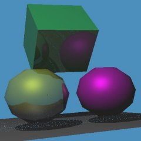

Please mail me (dee at dee.cz) if you find demos missing here.
|
Realtime Global Illumination Demos, demos with
advanced realtime computed illumination.
It's not strictly limited to physically correct global illumination,
specific techniques may approximate GI or compute only subset of GI;
such solutions may be faster and more suitable for realtime rendering.
What's important is that these demos compute and render more than is usual,
so they show possible future of mainstream realtime renderering.
Please mail me (dee at dee.cz) if you find demos missing here. |
[ NEWS ] [ DEMOS ] [ TECHNIQUES ] [ PEOPLE ]
Sorted by release date:
| Demo Authors Release date | Download binaries Source code Papers | Technique | Screenshot |
|---|---|---|---|
| Apollo 11 Nvidia 2014/11 | project page Windows binary | VXGI (voxel based) |
GPU Scene is static Light is dynamic GeForce 9xx only, 8GB RAM | |
| sfera David Dade Bucciarelli 2012/12 | binaries, source code | Realtime pathtracing |
OpenCL Scene is dynamic Light is dynamic spheres only | |
| Voxel cone tracing Alex Nankervis 2012/11 | author's projects page Windows binary, source code | Voxel cone tracing |
OpenGL 4.3 Scene is dynamic Light is dynamic whole scene in single 3d texture | |
| WebGL path tracing Evan Wallace 2010/12 | project page (runs in browser) source code (javascript generating glsl) | Realtime pathtracing |
GPU Scene is dynamic Light is dynamic | |
| LPV Andreas Kirsch 2010/07 | Windows binary, source codeproject page | Light Propagation Volume |
Scene is static Light is static | |
| Brigade Jacco Bikker 2010/05 | project page | Realtime pathtracing |
CPU+GPU Scene is dynamic Light is dynamic Windows, source code, optional GPU path needs Nvidia 200+ | |
| SmallptGPU David Bucciarelli 2009/12 | project page video | Path tracing |
GPU/OpenCL Scene is dynamic Light is dynamic Windows, Linux, spheres only, ~1fps, source code | |
| The Once Known as SmallPT Thierry Berger-Perrin 2009/01 | project page | Path tracing |
GPU/CUDA Scene is dynamic Light is dynamic Windows, Linux, Nvidia only, spheres only, ~50fps, source code | |
| Lightsmark Stepan Hrbek 2007/10 | project page technique explanation: penumbra shadows technique explanation: integration | Realtime radiosity |
GPU+CPU Scene is dynamic Light is dynamic Windows, Linux, ~500fps |  |
| DX10 Radiosity and Soft Shadows Simon Bratel 2007/10 | Windows binarypaper | Deffered instant radiosity |
GPU Scene is static Light is dynamic Vista and Direct3D 10 only | |
| yaCORT Benjamin Segovia 2007/06 | project page | Realtime raytracing |
CPU Scene is static Light is static ~0.5fps raytraced static GI, source code for Linux. | |
| Global Illumination AMD, Emil Persson 2007/06 | Windows Vista binary, source codeAMD Direct3D 10 samples | Grid of cubemaps |
GPU Scene is static Light is dynamic Vista and Direct3D 10 only | |
| Arauna Jacco Bikker 2007/04 | project page | Realtime raytracing |
CPU Scene is static Light is dynamic | |
| Lightsprint Demo Lightsprint 2007/03 | Windows binaryproject page technique explanation: penumbra shadows technique explanation: realtime radiosity [cz] technique explanation: integration | Realtime radiosity |
GPU+CPU Scene is dynamic Light is dynamic | |
| Deferred Rendered Radiosity from First Person Perspective Simon Bratel 2007/03 | Windows binarytechnique explanation forum | Deffered instant radiosity |
GPU Scene is static Light is fixed to camera | |
| POV ray beta RTR many 2006/11 | project page with Windows/Mac/Linux binaries and source code RTN article | Realtime raytracing |
CPU Scene is dynamic Light is dynamic | |
| RealStorm Global Illumination Bench 2006 Realstorm 2006 | project page with Windows binary | Realtime raytracing |
CPU Scene is dynamic Light is dynamic | |
| Realtime Radiosity Bugs ©tìpán Hrbek, Petr ©»astný 2006/09 | Windows binaryproject page technique explanation: penumbra shadows technique explanation: realtime radiosity [cz] technique explanation: integration | Realtime radiosity |
GPU+CPU Scene is static Light is dynamic | |
| RealTime Radiosity on GPU Lionel Berenguier 2006 | Windows binarytechnique explanation | Radiance projection |
GPU, direct+2 diffuse bounces Scene is dynamic Light is dynamic Doesn't work on ATI / NVIDIA? | |
| Stream Ray Tracer Gabriel Moreno 2004 | Windows binary source codeproject page (broken) | Realtime raytracing |
GPU Scene is dynamic Light is dynamic Doesn't work on ATI? |  |
| Real-Time Radiosity demo Nik Chapman 2004 | Windows binarytechnique explanation | Instant radiosity |
GPU Scene is dynamic Light is static Doesn't work on ATI? | |
| Hardware Global Illumination on the Radeon 9800 Mangesh Nijasure, Sumanta Pattanaik, Vineet Goel 2003 | Windows binaryabstract abstract | Grid of cubemaps |
GPU Scene is dynamic Light is dynamic | |
| Radiosity in dynamic scenes ©tìpán Hrbek 2000 | DOS+Linux binaries, source code [cz]technique explanation [cz] | Realtime radiosity |
CPU Scene is dynamic Light is dynamic | |
| Realtime Radiosity 2 Daniel Sýkora, ©tìpán Hrbek 2000 | Windows+DOS+Linux binaries | Realtime GI mix |
CPU Scene is dynamic Light is dynamic Quality suffers from high compression of precomputed data, not from the technique itself. | |
| many realtime raytraced intros many 1995-2001 | list, Windows+DOS binaries | Realtime raytracing |
CPU, specular bounces Scene is dynamic Light is dynamic |